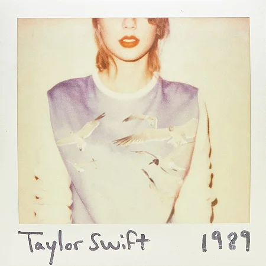
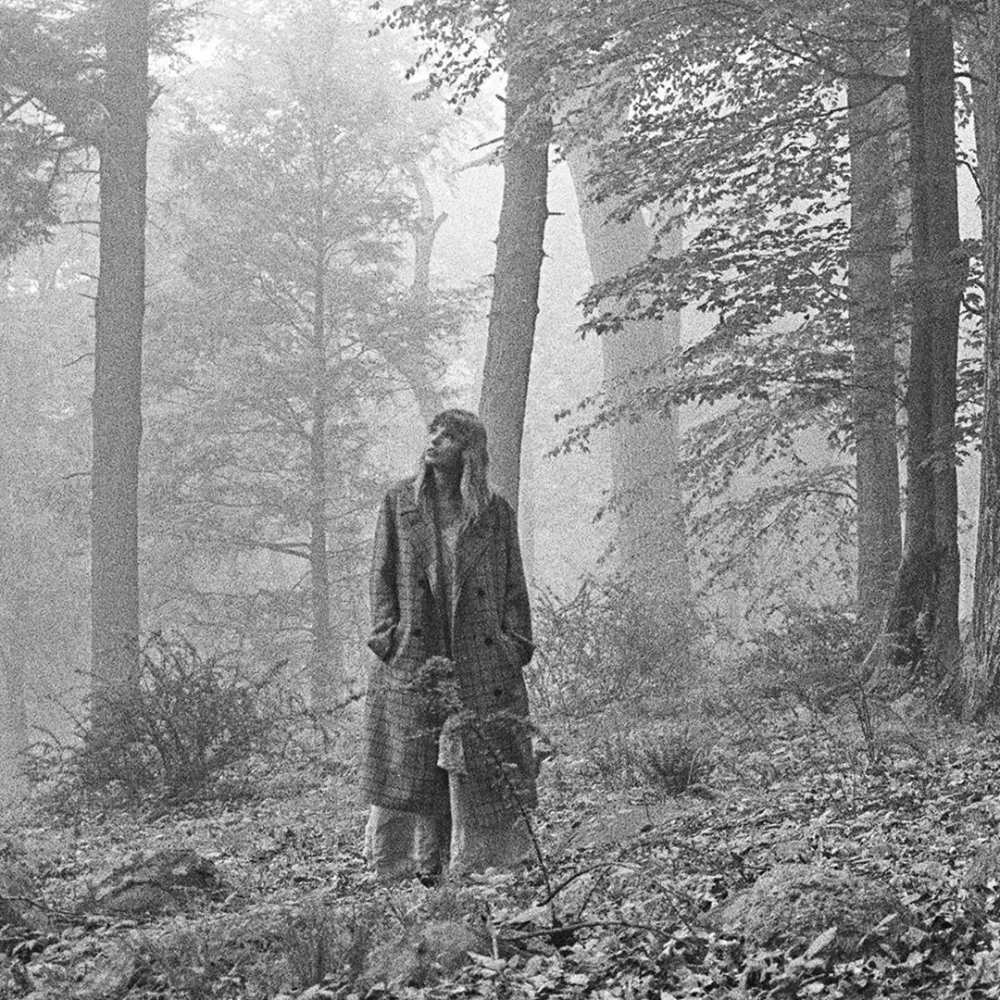
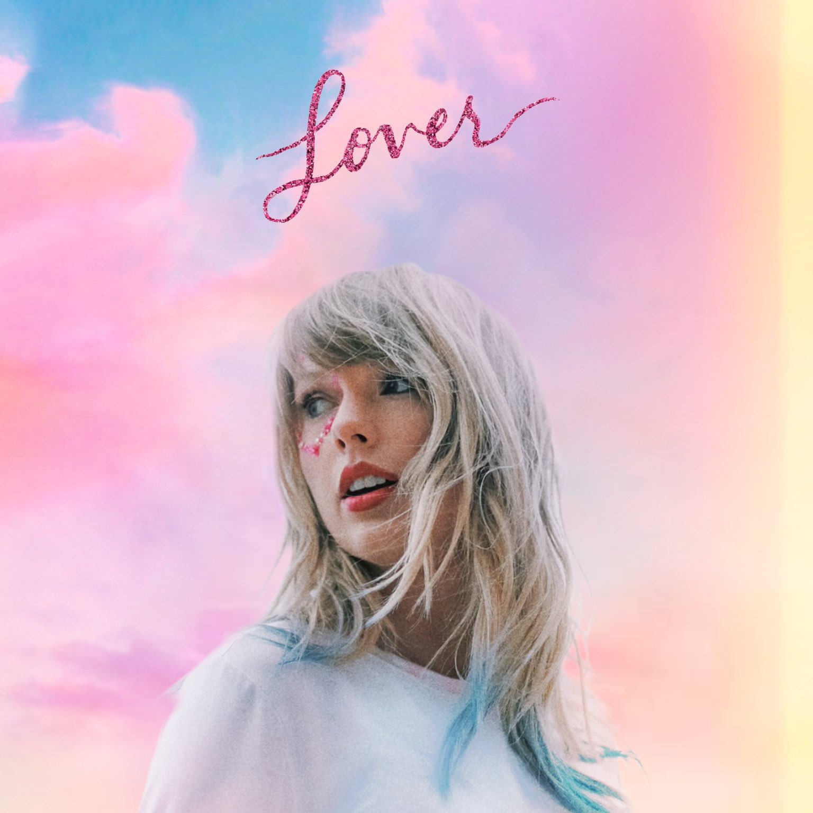

Tudo que a Taylor escreveu sobre nós
NataliJr
-
1You are In LoveTaylor Swift
-
2Invisible StringTaylor Swift
-
3hoaxTaylor Swift
-
4tolerate itTaylor Swift
-
5
 The Last TimeTaylor Swift
The Last TimeTaylor Swift -
6coney islandTaylor Swift
-
7
Better manTaylor Swift
-
8
 BejeweledTaylor Swift
BejeweledTaylor Swift -
9
The Great WarTaylor Swift
-
10Out Of The WoodsTaylor Swift
-
11peaceTaylor Swift
-
12AfterglowTaylor Swift
Resenha ...